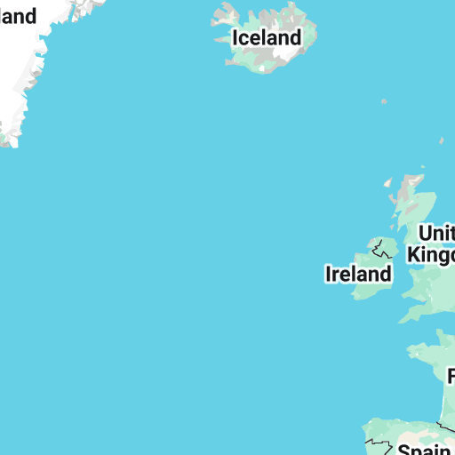
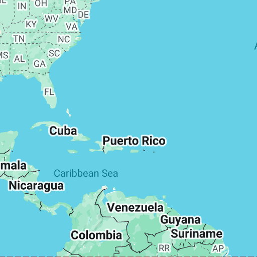
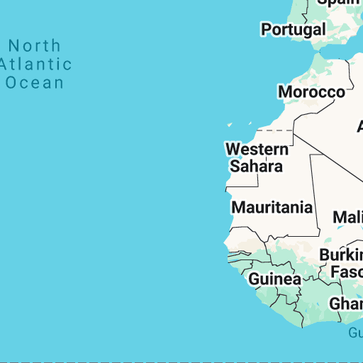
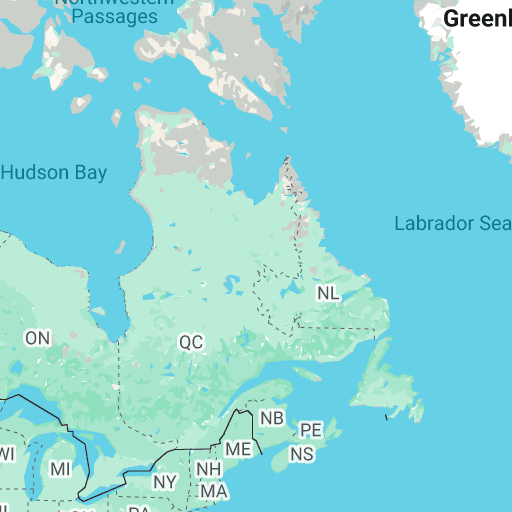
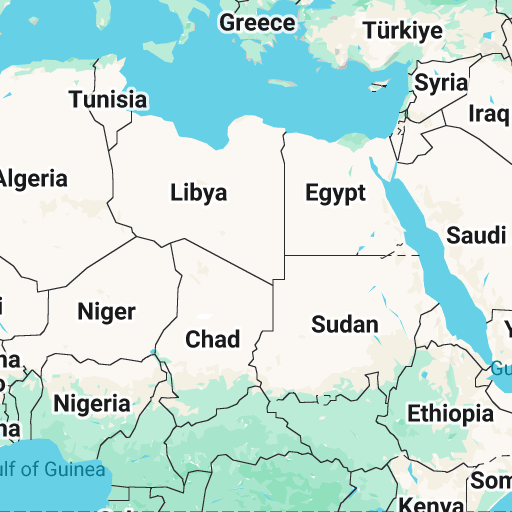
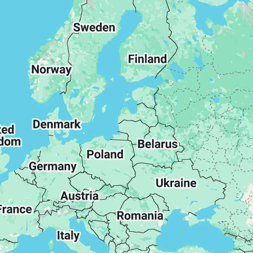
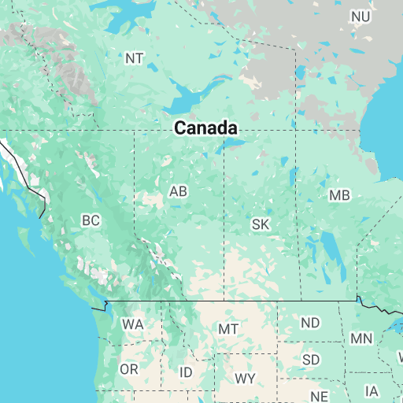

Open full screen to view more
Russian places in the UK
Collapse map legend
Map details
Copy map
Print map
Zoom to viewport
Embed map
Download KML
View map in Google Earth
Russian places in the UK
Russian places in the UK
98,262 views
Published yesterday at 13:20
Alma Avenue, Skegness
Alma Avenue, Hornchurch
Alma Lane
Alma Lane
Alma Lane
Alma Lane
Alma Lane
Alma Lane
Alma Lane
Alma Place
Alma Place
Alma Place
Alma Place
Alma Place, Newquay
Alma Place, Gloucester
Alma Road, Southampton
Alma Road, Bournemouth
Alma Road
Alma Road, Selston
Alma Road
Alma Road, Romsey
Alma Road, Enfield
Alma Road, Leeds
Alma Road, London
Alma Road, Tideswell
Alma Road, Windsor
Alma Square, London
Alma Street, Bacup
Alma Street
Alma Street
Alma Street
Alma Street
Alma Street
Alma Street
Alma Street, Weston-super-Mare
Alma Street
Alma Terrace
Alma Terrace
Alma Terrace
Alma Terrace
Alma Terrace
Alma Terrace
Alma Terrace
Alma Terrace, York
Alma Terrace, Ryton
Angerstein Wharf
Archangel Street
Anna Pavlova Close
Azof Street
Balaclava Rd, London
Balaclava Rd, Surbiton
Balaclava Street
Cossack Ave, Warrington
Cossack Green, Southampton
Cossack Lane, Winchester
Cossack St, Lochgilphead
Cossack St, Rochester
Cossack Terrace, Sunderland
Crimea Close, Belfast,
Crimea Close, Northampton
Crimea Lane
Crimea Road
Crimea Rd, Aldershot
Crimea Rd, Deepcut
Crimea Rd, Bournemouth
Crimea St, Stretford
Crimea St, Belfast
Crimea St, Bacup
Crimea St, Glasgow
Czar St, London
Czar St, Leeds
Gagarin, Tamworth
Gagarin House, Winstanley Estate
Gagarin Terrace, Kilwinning
Gagarin Terrace, London
Gagarin Way, Cowdenbeath
Inkerman Close
Inkerman Close
Inkerman Close
Inkerman Close
Inkerman Court
Inkerman Court
Inkerman Road
Inkerman Road
Inkerman Road
Inkerman Road
Inkerman Road
Inkerman Road
Inkerman Road
Inkerman Street
Inkerman Street
Inkerman Street
Inkerman Street
Inkerman Street
Inkerman Street
Inkerman Street
Inkerman Street
Inkerman Street
Inkerman Terrace
Inkerman Terrace
Inkerman Terrace
Inkerman Terrace
Inkerman Way
Kapitza House
Kremlin Drive, Liverpool
Lenin Terrace, Stanley
Marx & Lenin Terrace,
Muscovy St, London
Moscow Rd, London
Moscow Rd, East Sussex
Moscow Rd, Stockport
Moscow Rd East, Stockport
Moscow Place, London
Moscow Drive, Liverpool
Moscow Village, Scotland
Moscow Lane, Shepshed
Moscow Mansions
Muscovy Rd, Ashford
Muscovy Rd, Birmingham
Neva Avenue, Birkenhead
Neva Road, Southampton
Neva Road, Weston-super-Mare
Obolensky Building, Trent College
Olga St, London
Onega Gate
Onega Terrace
Pavlova Close
Pavlova Court
Platoff Rd, Lymington
Romanoff Lodge
Russia Row, London
Russia St, Accrington
Russia Lane, London
Russian Drive, Liverpool
Russia Dock Rd, London
Russian Ave, Liverpool
Samara Close, Chatham
Sebastopol
Sebastopol Lane
Sebastopol Road, Aldershot
Sebastopol Road
Sebastopol Street
Siberia Avenue
Sochi Mews, Cheltenham
St Petersburgh Mews, London
St Petersburgh Place, London
Stalin Rd, Colchester
Stalin Ave, Chatham
Tereshkova Building, Clapton Girls Academy
Tolstoi Rd, Poole
Tolstoy Cottage
Troika Close
Volgograd Place, Coventry
Woronzow Rd, London
Yalta Close, Cheltenham
Yaroslavl bridge, Exeter
Russia Dock Woodland
Azof House
Cossack square
Kapitza Building
Crimea Pass
Nashdom Lane
Moscow Road/Har Lag.
Moscow street
Crimea Court
Sevastopol Street
Sevastopol Road
Sevastopol Place
The Russian House
Balaclava St
Inkerman St
Anapa Mews, Cheltenham
Ustinov College
Lubetkin Theatre
Karelia Cottage
Karelia Court
Elbrus Drive
Tundra Close
Tundra Grove
Tundra Walk
Tartar Road
Tartar Hill
Tartar Hill Cottages
Petersburg Rd
Leningrad Rd
Czarina Rise
Moscow Farm
Moscow Farm
Nijinsky Way
Nijinsky House
Angerstein Rd
Angerstein Ln
Angerstein Rd
Angerstein Close
Angerstein Court
Angerstein Mews
Crimea Court
Crimea Terrace
Alma Avenue
Alma Avenue
Alma Avenue
Alma Avenue, Walthamstow
Alma Avenue
Alma Avenue
Alma Avenue
Alma Barn Mews
Alma Barracks
Alma Chase
Alma Heights
Alma Farm Rd
Alma Link
Alma Link
Kinburn St
Kinburn Drive
Kinburn House
Kinburn Rd
Kinburn Pl
Kinburn Terrace
Alma Cut
Balaclava Bay
Alma Close
Alma Close
Alma Close
Alma Close
Alma Close
Alma Close
Alma Close
Alma Close
Alma Close
Alma Close
Alma Close
Alma Close
Alma Close
Alma Close
Alma Gardens
Alma Close
Alma Close
Alma Close
Alma Close
Alma Close
Alma Close
Alma Villa Rise
Alma Villas
Alma Hill
Alma Wood Close
Alma Wood
Alma Wood
Alma Park Wood
Alma Way
Alma Way
Alma Way
Alma Vale Rd
Alma Farm
Alma Farm
Balaclava Rd
Balaclava Ln
Balaclava Rd
Balaclava Rd
Balaclava Rd
Balaclava Rd
Balaclava Rd
Balaclava Rd
Balaclava Rd
Balaclava Rd
Balaclava Rd
Balaclava Rd
Balaclava Rd
Balaclava House
Balaclava House
Balaclava House
Balaclava House
Balaclava Buildings
Balaclava Ct
Balaclava Ln
Balaclava Croft
Balaclava Hall
Balaclava St
Balaclava St
Alma Cottages
Alma Cottage
Alma Cottage
Alma Cottages
Alma Cottages
Alma Cottages
Alma Cottages
Alma Cottages
Alma Cottages
Alma Cottages
Alma Crescent
Alma Crescent
Alma Crescent
Alma Crescent
Alma Court
Alma Court
Alma Court
Alma Court
Alma Court
Alma Court
Alma Court
Alma Court
Alma Court
Alma Steps
Alma Green
Alma Grove
Alma Grove
Alma Grove
Alma Grove
Alma Gardens
Alma Gardens
Alma Hill
Alma Fields
Alma Field
Alma Row
Alma Row
Alma Row
Alma Parade
Alma Parade
Alma Park Rd
Alma Park Cl
Alma Park
Alma Drive
Alma Drive
Alma Drive
Alma Drive
Alma Pl
Alma Pl
Alma Pl
Alma Pl
Alma Pl
Alma Pl
Alma Place
Alma Pl
Alma Pl
Alma Pl
Alma Pl
Alma Pl
Alma Pl
Alma Pl
Alma Pl
Alma Pl
Alma Pl
Alma Pl
Alma Pl
Alma Pl
Alma Pl
Alma Pl
Alma Pl
Alma Pl
Alma Pl
Alma Pl
Alma Pl
Alma Pl
Lower Alma Pl
Upper Alma Pl
Alma Pl
Alma Pl
Alma Lodge
Alma Park Industrial Estate
Alma Terrace
Alma Terrace
Alma Terrace
Alma Terrace
Alma Terrace
Alma Terrace
Alma Terrace
Alma Terrace
Alma Terrace
Alma Terrace
Alma Terrace
Alma Terrace
Alma Terrace
Alma Terrace
Alma Terrace
Alma Terrace
Alma Terrace
Alma Terrace
Alma Terrace
Alma Terrace
Alma Terrace
Alma Terrace
Alma Terrace
Alma Terrace
Alma Terrace
Alma Terrace
Alma Terrace
Alma Terrace
Alma Terrace
Alma Terrace
Alma Terrace
Alma Sq
Alma Sq
Alma Square
Alma Square
Alma Square
Alma House - Scarborough
Alma Rd
Alma Rd
Alma Road
Alma Rd
Alma Rd
Alma Rd
Alma Rd
Alma Rd
Alma Rd
Alma Rd
Alma Rd
Alma Rd
Alma Rd
Alma Rd
Alma Rd
Alma Rd
Alma Rd
Alma Rd
Alma Rd
Alma Rd
Alma Rd
Alma Rd
Alma Rd
Alma Rd
Alma Rd
Alma Rd
Alma Rd
Alma Road
Alma Road
Alma Road
Alma Road
Alma Road
Alma Road
Alma Road
Alma Road
Alma Road
Alma Road
Alma Road
Alma Road
Alma Road
Alma Road
Alma Road
Alma Road
Alma Road
Alma Road
Alma Road
Alma Road
Alma Road
Alma Road
Alma Road
Alma Road
Alma Road
Alma Road
Alma Road
Alma Road
Alma Road
Alma Road
Alma Road
Alma Street
Alma Street
Alma Street
Alma Street
Alma Street
Alma Street
Lower Alma Street
Alma Street
Alma Street
Alma Street
Alma Street
Alma St
Alma Street
Alma Street
Alma Street
Alma Street
Alma Street
Alma Street
Alma Street
Alma Street
Alma Street
Alma Street
Alma Street
Alma Street
Alma Street
Alma Street
Alma Street
Alma Street
Alma Street
Alma Street
Alma Street
Alma St
Alma Street
Alma Street
Alma Street
Alma Street
Alma Street
Boris Nemtsov Place
Alma Street
Alma Street
Alma Street
Alma Street
Alma Street
Alma Street
Alma Street
Alma Street
Alma Street
Alma Street
Alma Street
Alma Street
Lower Alma Street
Alma Street
Alma Street
Alma Street
Alma Street
Alma Street
Alma Street
Alma Street
Alma Street
Alma Street
Alma Street
Alma Street
Alma Street
Alma Street
Alma Street
Alma Street
Alma Street
Alma Street
Alma Street
Alma Street
Alma Street
Alma Street
Alma Street
Alma Street
Alma Street
Alma Street
Alma Street
Alma Street
Alma St
Alma Street
Alma Street
Alma Street
Alma Street
Alma Street
Alma Street North
Alma Street West
Malakoff Street
Malakoff Close
Malakoff Road
Alma House
Alma House
Alma House
Alma Houses
Alma House
Alma House
Alma House
Azov Cl
Inkerman Court
Inkerman Court
Inkerman Drive
Inkerman Drive
Inkerman Grove
Inkerman Lane
Inkerman Lane
Inkerman Rise
Inkerman Place
Inkerman Place
Inkerman Farm
Inkerman Road
Alma Rd
Inkerman Road
Inkerman Road
Inkerman Row
Inkerman Row
Inkerman Row
Inkerman Street
Inkerman Street
Inkerman Street
Inkerman Street
Inkerman Street
Inkerman Street
Inkerman Terrace
Inkerman Terrace
Inkerman Terrace
Inkerman Terrace
Inkerman Way
Inkerman Way
Inkerman Cottages
Inkerman Cottage
Inkerman House
Inkerman Cottages
Inkerman House
Inkerman House
Inkerman House
Inkerman House
Inkerman House
Nicholas Kemmer Road
Golovine Lecture Theatre
Volga Burn stream
Russia Hall
Painter House
Peter House
Montague Burton Residences
Montague Burton Flats
Montague Burton House
Kinburn House
Beloff House
Borodin Ave
Borodin Cl
Borodin Ct
Stravinsky Rd
Rurik Ct
Emperor Lake
Nijinsky Cottage
Cossack Ct
Moscow Mill St
Moscow Mills
Czar Mews
Moscow Plantation
Russian Pool
Russian Plantation
Muscovy Bottom
Muscovy Wood
Moscow Lane
Moscow Lane
Moscow Mews Holiday Cottage
Berlin Quadrangle
Novorossiysk Rd
Tundra House
Tundra Close
Tundra Close
Muscovy Pl
Muscovy House
Muscovy House
Muscovy Mews
Muscovy Way
Muscovey Cl
Beit Shvidler Primary School
Blavatnik School of Government
... 628 more

Aldershot Military Cemetery
Barrow-in-Furness Graveyard
Chester (Lodge) Cemetery
Craigton Cemetery
Exning Cemetery
Greenock Cemetery
Harrogate (Stonefall) Cemetery
Hartlepool (West View Road) Cemetery
Huddersfield (Edgerton) Cemetery
Leeds (Harehills) Cemetery
Liverpool (Anfield) Cemetery
Liverpool (Kirkdale) Cemetery
Netley Military Cemetry
Shaftesbury Borough Cemetery
Tidworth Military Cemetery
Аксёнов, Гермоген Семёнович
Аладьин, Алексей Фёдорович
Альмединген, Марта Александровна
Ангерштейн, Юлиус - John Julius Angerstein
Андреев, Николай Ефремович
Аничков, Александр Иванович
Анреп, Борис Васильевич фон
Арапов, Кирилл Семенович
Арбенина, Стелла
Архиепископ Никодим (Нагаев)
Архимандрит Софроний (Сахаров) - Archimandrite Sophrony (Sakharov)
Астафьева, Серафима Александровна - Serafina Astafieva
Ашешов, Игорь Николаевич
Багратуни Яков Герасимович, Лев Яковлевич
Бартон, Монтегю
Бахтин, Николай Михайлович
Бек-Мамедов, Андрей Львович
Белосельский-Белозерский, Сергей Константинович
Бенкендорф, Александр Константинович - Alexander Konstantinovich Benckendorff
Бенуа, Надежда Леонтьевна
Берлин, Исайя
Билибин, Александр Иванович
Брайкевич, Михаил Васильевич
Бродский, Адольф Давидович - Adolph Davidovich Brodsky
Будберг, Мария Игнатьевна - Maria Ignatievna Budberg
Буксгевден, София Карловна - Baroness Sophie Buxhoeveden
Виноградов, Павел Гаврилович
Волков, Николай Александрович
Волховский, Феликс Вадимович
Воробьев С. Verobieff, Simon
Воронцов, Семён Романович - Semyon Romanovich Vorontsov
Воронцова, Екатерина Семёновна - Ekaterina Semyonovna Vorontsov
Вяземская, Мария Александровна - Princess Marie A Wiasemsky
Вяземский, Сергей Константинович (де Болотофф)
Ганц, Николай Адольфович
Гальфтер, Виктор Петрович
Гартье, Эдуард Эдуардович
Геруа, Борис Владимирович
Герцогиня Аберкорн, Александра Гамильтон
Гиббс, Чарльз Сидней
Голицыны Георгий Владимирович, Эммануил Владимирович, Владимир Эммануилович
Головин, Михаил Николаевич
Гольдберг, Анатолий Максимович
Гордин, Дора
Городецкая, Надежда Даниловна
Грейд, Лев
Гросс, Генрих Иванович
Гучкова-Трейл, Вера Александровна
Девитте, Николай Петрович
Делфонт, Бернард
Десино, Константин Николаевич
Димсдейл, Томас
Доу, Джордж
Дуров, Александр
Дыбовский, Виктор Владимирович
Евграфов, Николай
Ермолов, Николай Сергеевич
Зарицкая, Ирина Ильинична
Засс, Александр Иванович - Alexander Zass
Звегинцов, Дмитрий Дмитриевич
Зёрновы, Николай Михайлович и Милица Владимировна
Зиновьев, Лев Александрович
Игумения Елизавета Ампенова
Исерлис, Юлий Давыдович - Julius Isserlis
Кадет Виноградов А.
Кар, Ида
Карсавина, Тамара Платоновна - Tamara Platonovna Karsavina
Катков, Георгий Михайлович
Катков, Михаил Мефодиевич
Кербер, Людвиг Бернгардович
Керенский, Александр Фёдорович - Alexander Fyodorovich Kerensky
Керенский, Олег Александрович - Oleg Aleksandrovich Kerensky
Кирста, Георгий Константинович
Клин, Лев Михайлович
Кнюпффер, Дейзи
Коновалов, Сергей Александрович
Корсаков, Иван Алексеевич
Корчинская, Мария Александровна
Котелянский, Самуил Соломонович
Кульман, Мария Михайловна - Maria Mikhailovna Zernova Kullmann
Кульчицкий Николай Константинович - Nikolai Konstantinovich Kulchitsky
Кякшт, Лидия Георгиевна - Lydia Georgievna Kyasht
Легат, Николай Густавович - Nikolai Gustavovich Legat
Ликиардопуло, Михаил Фёдорович
Лопухова, Лидия Васильевна - Lydia Lopokova
Любеткин, Бертольд
Ляхов, Николай Дмитриевич
Макарцын, Дмитрий
Маркс, Майкл
Марсден, Кэт
Мейендорф, Александр Феликсович
Менчик, Вера Францевна
Меренберг, София Николаевна - Sophie of Merenberg
Мессерер, Суламифь Михайловна - Sulamith Mikhailovna Messerer
Метнер, Николай Карлович - Nikolai Karlovich Medtner
Микеладзе: Иверико, София, Гаяне (Мики Иверия)
Митрополит Антоний Сурожский - Metropolitan Anthony of Sourozh
Молло, Евгений Семенович
Набоков, Константин Дмитриевич - Constantine Dmitrievich Nabokoff
Нарышкин, Фёдор Вадимович
Новикова, Ольга Алексеевна
Ноув, Александр
Оболенский, Дмитрий Дмитриевич - Sir Dimitri Obolensky
Оболенский, Александр Сергеевич - Prince Alexander Sergeevich Obolensky
Огарёв, Николай Платонович
Огорелков, Петр
Оноприенко, Александр Александрович
Орлов, Николай Андреевич
Павлова, Анна Павловна - Anna Pavlovna (Matveyevna) Pavlova
Пасечник, Владимир Артёмович
Пастернак, Леонид Осипович - Leonid Osipovich Pasternak
Пеняков, Владимир Дмитриевич
Перебейнис, Василий
Полунин, Николай Владимирович
Полунин, Олег Владимирович
Постан, Моисей Ефимович
Прен (Прэн, Торнтон-Прэн) Эрик Дмитриевич (Эдмундович)
Прокофьев, Олег Сергеевич
Пятигорский, Александр Моисеевич - Alexander Moiseyevich Piatigorsky
Риттих, Александр Александрович - Aleksandr Aleksandrovich Rittiсh
Родзянко, Павел Павлович
Романов, Андрей Александрович - Prince Andrei Alexandrovich Romanov
Романов, Всеволод Иоаннович
Романов, Дмитрий Александрович - Prince Dmitri Alexandrovich of Russia
Романов, Михаил Михайлович - Grand Duke Michael Mikhailovich of Russia
Рэнсом, Артур, Рэнсом (Шелепина) Евгения Петровна
Саблин, Евгений Васильевич - Eugeniy Vassilievitch Sabline
Сава, Георгий
Слободская, Ода Абрамовна
Смирнов, Михаил Иванович
Смирнов, Яков Иванович
Солдаты Голландской экспедиции- Russian soldiers of the Holland expedition against France
Степняк-Кравчинский, Сергей Михайлович
Сумароков-Эльстон, Михаил Николаевич - Mikhail Nikolayevich Sumarokov-Elston
Тюдор, Лариса Фёдоровна
Уваров, Борис Петрович - Sir Boris Petrovitch Uvarov
Уварова, Ольга Николаевна - Dame Olga Nikolaevna Uvarov
Ульянин, Сергей Алексеевич
Успенский, Пётр Демьянович - Pyotr Demianovich Ouspenskii
Файнштейн, Элен
Фейгин, Леонид Вениаминович - Leonid Veniaminovich Feygin
Фон Мекк, Галина Николаевна - Galina von Meck
Франк Семен Людвигович - Semyon Lyudvigovich Frank
Цытович, Алексей Владимирович
Чайковский, Николай Васильевич
Чаплицкая, Мария
Чемберс, Владимир Яковлевич
Чемберс-Билибина Мария Яковлевна (Мария Елизавета Вероника)
Чернавин, Владимир Вячеславович
Шанкс, Эмилия Яковлевна
Шателен, Сергей Андреевич
фон Шепинг, Михаил Андреевич
Шибанов, Александр Игоревич
Шиловский, Пётр Петрович
Штейнберг, Аарон Захарович
Юркевич, Владимир Васильевич и де Йорк, Исмаэль
Юрьевская, Екатерина Александровна - Princess Catherine Alexandrovna Yurievskaya
Яворская (Барятинская), Лидия Борисовна
Языкова (Ванна) Нина Евгеньевна
... 170 more
Александрийский столп
Анархисты
Арескин, Роберт Карлович
Бек-Мамедов, Андрей Львович
Бюст Иосифа Бродского в Килском Университете
Бюст В.И.Ленина
Бюст В.И.Ленина
Бюст Д.И.Менделеева - Bust of Dm. Mendeleev
Бюст М.А.Шолохова
Волгоградский мемориал
Выставка "Советские летчики в Шотландии"
Табличка советским воинам на о. Джерси - Plaque to Soviet servicemen on Jersey
Камень памяти Гагарина - Plaque to Yury Gagarin
Кейт, Джеймс
Лермонтов, Михаил Юрьевич
Манчестерский кенотаф
Мемориал Битвы за Британию
Мемориал советским летчикам
Мемориал умершим в плену российским морякам - Memorial to the Russian sailors, POW
Мемориал Крымской войны - The Guards Crimean War Memorial
Мемориальный вишнёвый сад
Мурал Майл-Энд-Роуд
Олимпийцам 1908 года - Memorial to Olympics sportsmen 1908
Памятник Александру Оболенскому - Statue of Prince Obolensky
Памятник Анне Павловой
Памятник женщинам-секретным агентам
Памятник крейсеру "Варяг" - Memorial to Russian cruiser Varyag
Памятник Петру I - Peter the Great Statue
Памятник Юрию Гагарину в Гринвич - Stature of Jury Gagarin in Greenwich
Памятник морякам-подводникам- Memorial to sailors in Dundee
Памятник русской борзой Царь
Памятник участникам Северных конвоев
Памятник участникам Северных конвоев - The Arctic Convoys Memorial
Памятник участникам Северных конвоев - The Arctic Convoys Memorial
Памятник
участникам Северных конвоев в пос.Лайнесс, о-в Хой (Оркнейские острова)
- The Arctic Convoys Memorial on Orkney Islands
Памятник участникам Северных конвоев на мысу Коув в бухте Лох-Ю
Памятник экипажу теплохода "Суонленд"
Памятник экипажу траулера "Картли"
Памятник царской семье
Памятник царской семье
Памятный крест морякам
Пётр I на "Стене предков"
Призрачный велосипед
Присяжные (арт-объект)
“Русский орёл”- The Russian Eagle
Скульптура "Разрушить стену недоверия"
Советский Военный Мемориал - Soviet WW2 memorial
Советские военнопленные на Олдерни
Советские лётчики
Статуя великой княгини Елизаветы Фёдоровны
Статуя В.И.Ленина
Статуя новомученицы Великой княгини Елизаветы
Статуя Анны Павловой на куполе театра «Виктория Палас»
Фролова, Катя
Харрогитский мемориал
Шибанов, Александр Игоревич
Эскадрильи орлов
12 ответов на трагедию
... 54 more

London
London
London
London
Aberdeen
Ashford
Belfast
Birmingham
Bodiam
Bradford
Brighton
Bristol
Buckfast
Bury Saint Edmunds
Cambridge
Cardiff
Carlisle
Cheltenham
Clacton-on-Sea
Colchester
Derby
Douglas
Dundee
Durham
Edinburgh
Ipswich
Glasgow
King's Lynn
Kingston-upon-Hull
Leeds
Liverpool
Luton
Manchester
Mettingham
Newark
Newcastle-upon-Tyne
Newry
Norwich
Nottingham
Oxford
Peterborough
Portsmouth
Romford
Southampton
Swindon
Telford
Totnes
Truro
Royal Tunbridge Wells
Wimborne
Walsingham
Wallasey
York
... 49 more
Айронсайд, Эдмунд, барон Архангельский
Айронсайд, Эдмунд, Барон Архангельский
Александр III
Александра Фёдоровна
Митрополит Антоний Сурожский
Арктические конвои
Арктические конвои
Арктические конвои
Арктические конвои
Астафьева, Серафима Александровна
Афанасьев, Всеволод
Бартон, Монтегю
Бедан, Альбер
Безикович, Абрам Самойлович
Берлин, Исайя
Берлин, Исайя
Берлин, Исайя
Берлин, Исайя
Берлин, Исайя
Бродский, Адольф Давидович
Бродский, Иосиф Александрович
Бычков, Май
Бычков, Олег
Бычкова, Доротея
Васильев, Иван
Семья Васильевы
Великая княгиня Елена Павловна
Великая княгиня Елена Павловна
Веннинг, Вальтер
Витраж в память Северных конвоев
Воронцов, Семён Романович
Выставка Фаберже
Гагарин, Юрий Алексеевич
Герцен, Александр Иванович
Герцен, Александр Иванович
Герцен, Александр Иванович
Гиббс, Чарльз Сидней
Гончаров, Иван Александрович
Грейг, Самуил Карлович
Грейд, Лев
Григорян, Светлана
Гульд, Луиза
Гульд, Луиза
Делфонт, Бернард
Дерево, посаженное Петром I
Душин, Владимир
Дьяченко, Олег
Дюмареск, Даниэль
Дягилев и Пикассо
Замятин, Евгений Иванович
Иванело, Виктор Валерьевич
Императорская семья
Капица, Пётр Леонидович
Карсавина, Тамара Платоновна
Карсавина, Тамара Платоновна
Кладкова, Алла
Косяк, Дмитрий
Кормильцев, Илья Валерьевич
Короткова, Анна
Криппс, Стаффорд
Кропоткин, Пётр Алексеевич
Кропоткин, Пётр Алексеевич
Круглик, Лариса Даниловна
Левитин, Валерий
Легат, Николай Густавович
Ледокол "Святогор" ("Красин")
Ленин, Владимир Ильич
Ленин, Владимир Ильич
Логинова, Светлана
Локер-Лэмпсон, Оливер
Любеткин, Бертольд Романович
Люксембург, Роза, и российские революционеры
МакМакин, Маргарет
Маркс, Майкл
Международный балет
Мемориальная доска Советским и Английским офицерам
Мемориальная доска советским летчикам
Метнер, Николай Карлович
Михайловский, Никита Александрович
Морфилл, Уильям Ричард
Николай I
Нуреев, Рудольф Хаметович
Ольденбургский, Пётр Георгиевич
Павлова, Анна Павловна
Пётр I
Пётр I
Пётр I
Пётр I
Петропавловский, Владимир Васильевич
Пленные Крымской войны
Плиты с цитатами
Праведники народов мира
Савенко, Ирина
Севастопольский камень
Стадион "Туикенем"
Театр "Альгамбра"
Тургенев, Иван Сергеевич
Успенский, Пётр Демьянович
Участникам Северных конвоев
Федорович, София
Федорович, София
Семья Хазины
Царевич
Чертков, Владимир Григорьевич
Семья Шамара
Эспиноса, Эдуард
Эспиноса, Эдуард
Эспиноса, Эдуард
45 советских военнопленных, погибших на Олдерни
G8
G8
... 107 more
Bentley Wood
Bevin Court
Cohen House
Cranbrook Estate
Dartington Hall
De La Warr Pavilion
Dorset Estate
Gilbey House
Hallfield Estate
Highpoint I & II
HMS Belfast
Kenwood House
Lake View Estate
Lenin Estate (Cambridge Court)
Mandela Way T-34 Tank
Priory Green Estate
Provender House
Shann House
Shrubs Wood
Sivill House
Spa Green Estate
Star & Garter Inn
The Athenaeum Club
Tilton House
Wilderness House
Аббатство "Нашдом"
Адрес Рерихов в Лондоне
Башня Татлина в Норидже
Бывшая русская православная церковь
Бывшее здание Пушкинского дома
Бывшее здание консульства СССР
Бывший собор РПЦЗ
Витраж Марка Шагала в кафедральном соборе Чичестера
Витражи Марка Шагала в Тудли, Кент
Галерея и музей Расселл-Котс
Гобелен с Петром Первым
Дом Вильяма Валькота
Дом Говарда
Дом Б.Р.Любеткина
Дорич-хаус
Дом балерины Л.Лопуховой
Зал Бакста в музее «Уоддесдон»
Зал 1844 года, Букингемский дворец
Здание бывшего Посольства Российской Империи
Здание бывшего консульства Российской Империи
Зоопарк Дадли
Императорский фонтан
Кембриджский университет
Кинотеатр Вулидж Гранада (бывший)
Кинотеатр Гранада, Мейдстоун (бывший)
Кинотеатр Гранада, Шрусбери
Кинотеатр Тутинг Гранада
Кларенс-Хаус
Колесница
Коттедж Фрогмор
Коллекция Леонида Пастернака
Лондонский зоопарк
Малая Москва
Маленькая Россия
Мемориальная библиотека Маркса
Место Ashburnham House
Место первой русской православной церкви
Место установки скульптур "Чингисхан" и "Хранительница"
Место транзитного лагеря "Атлантик Парк"
Мозаики Бориса Анрепа в Национальной Галерее
Мост Медуэй
Музей Арктических конвоев
Музей Джона Пола Джонса
Оксфордский Университет
Остров Инчкит
Остров Св. Марии
Пеликаны в St James's Park
Первый адрес Иосифа Бродского в Лондоне
Поликлиника Финсбери
Посольство СССР при Союзных правительствах
Русская дача
Русская изба
Русский дом Е.В.Саблина
Русский домик
Русский домик в имении Чатсуорт
Сад Антона Чехова
Сибирский ирис
Слоновник
Статуя Энн Лидии Эванс
Театр Гранада (Уолтхэмстоу)
Театр "Кембридж"
Театр «Феникс»
Фонтан Наума Габо в Больнице Святого Томаса
64 Heath Dr
85-91 Genesta Rd
... 86 more
RT
Генеральное Консульство РФ в Шотландии
ИТАР-ТАСС
Консульский отдел Посольства России в Великобритании
Общество «Сотрудничества в Русских и Советских исследованиях»
Посольство РФ в Великобритании
Постоянное Представительство России при Международной Морской Организации
Представительство Россотрудничества в Великобритании
Пушкинский Дом
Резиденция Посла России в Великобритании
РИА-Новости
Торговое Представительство России в Великобритании
Галерея Art Russe
... 9 more
Made with Google My Maps
| ← | Move left |
| → | Move right |
| ↑ | Move up |
| ↓ | Move down |
| + | Zoom in |
| - | Zoom out |
| Home | Jump left by 75% |
| End | Jump right by 75% |
| Page Up | Jump up by 75% |
| Page Down | Jump down by 75% |







Share via Facebook
Share via Twitter
Share via email
Embed on my site
Sign in
Russian places in the UK
98,262 views
Made with Google My Maps
Russian places in the UK
- Map data ©2025 Google, INEGI
- Terms
1,000 km
This map was created by a user. Learn how to create your own.
Manage account
Create new map
Open map
Shared with you
Help
Feedback
Report inappropriate content
Report abusive content
Report legal issue
Google Drive